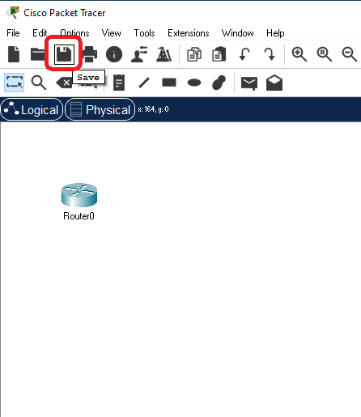
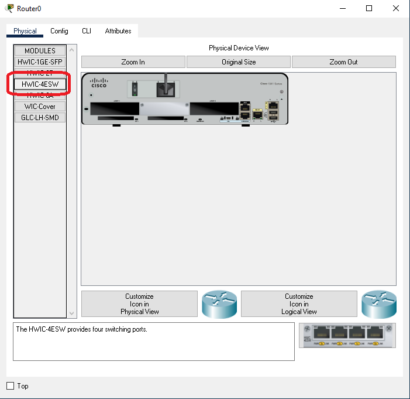
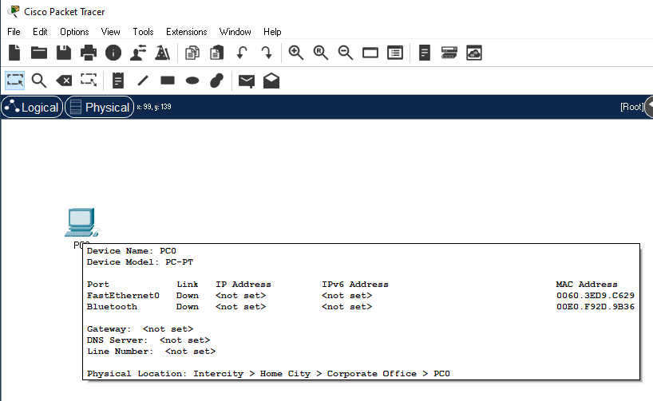
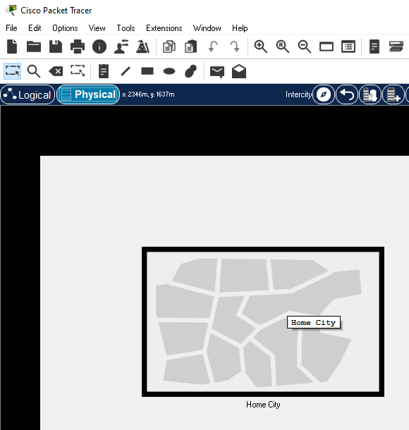

Screen Reader Basics
Cisco Packet Tracer supports screen readers for all buttons on the application window and dialogs. Screen readers should read textual information on the widget when it receives focus.


There are a few exceptions where the screen reader does not work.
1. The workspaces (Logical View and Physical View) are graphical workspaces. Screen readers will not receive contextual information on the items in these workspaces.
Use the Workspace List feature to have a textual representation of the graphical Logical view.

2. On the Physical Workspace, use the Navigation Panel (Shift N) button to bring out a tree representation of the physical workspace and to navigate it.
